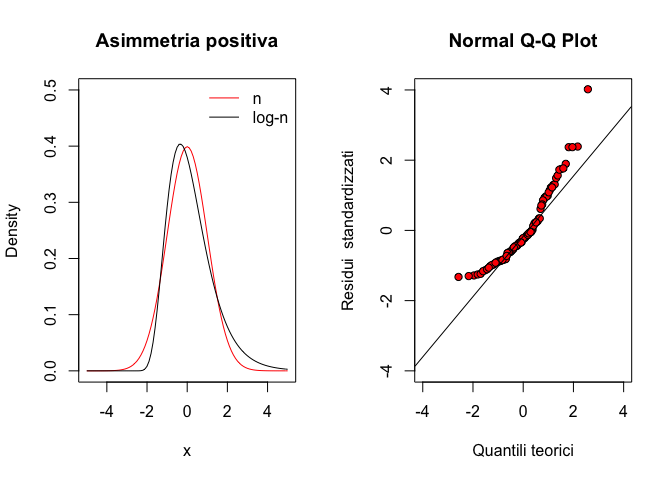

Capitolo 6 Dalla popolazione al campione. I modelli stocastici
6.1 Introduzione
Dietro ad ogni esperimento vi è una popolazione di soggetti misurabili che non può essere considerata nella sua interezza, in quanto non ne abbiamo le possibilità. Ad esempio, se vogliamo misurare la produzione del frumento nella media Valle del Tevere, potremmo impiegare un numero finito, ma elevatissimo, di parcelle di terreno. Per questo, siamo costretti a scegliere casualmente un numero piccolo di parcelle rappresentative e a misurare quelle, in modo da poter ottenere risultati validi reppresentativi dell’intera popolazione, con un processo detto ‘inferenza statistica’.
Proviamo, per un attimo, a porre la nostra attenzione non sul campione, ma sulla popolazione da cui esso deriva. Quali sono le sue caratteristiche? La risposta non è banale, proprio perché non conosciamo (e non potremo mai conoscere) tutti i soggetti che compongono la popolazione stessa. Possiamo però fare alcune considerazioni legate alla nostra esperienza professionale, che risultino condivisibili dall’intera comunità scientifica. Queste considerazioni costituiranno la base dell’inferenza statistica e, dato che stiamo facendo congetture sulle caratteristiche di una popolazione (o meglio sui suoi ‘parametri’), parleremo di ASSUNZIONE PARAMETRICA. Insomma, per fare inferenza abbiamo bisogno di condividere il punto di partenza, cioè le caratteristiche della popolazione da cui abbiamo estratto il campione.
6.2 Popolazione di soggetti e popolazione di misure
Abbiamo detto che la popolazione è fatta di soggetti, come, ad esempio, le parcelle sperimentali della Media Valle del Tevere. Chiariamo subito che a noi non interessano i soggetti in quanto tali, ma interessano le misure che su di essi immaginiamo di aver preso. Avremo quindi in mano una popolazione di misure. Come saranno queste misure?
Possiamo facilmente immaginare che saranno una diversa dall’altra, perchè gli individui sono uno diverso dall’altro. Le differenze saranno dovute ad elementi deterministici, che possiamo individuare, come sesso, età, specie, metodo di coltivazione o trattamento. Lasciamo per un’attimo da parte tutte le differenze che possiamo spiegare (ne riparleremo tra un po’…). Immaginiamo anche che non vi siano differenze ‘sistematiche’, legate a fattori che non siamo in grado di individuare, ad esempio relative ad un’errata taratura dello strumento di misura. Rimangono quindi solo le differenze che puramente stocastiche. Ci chiediamo: è possibile scrivere un modello matematico (un’equazione) che descriva qualcosa che è puramente stocastico?
6.3 La scienza del caso
Possiamo farlo, perché esistono i cosiddetti modelli stocastici, niente altro che funzioni probabilità. E’ evidente che, se parliamo di produzione del frumento, a parità di varietà, concimazione, clima, e ogni altro elemento controllabile e spiegabile, le differenze di produzione sono casuali, ma si può dire che valori pari a 1.5 t/ha o 9.5 t/ha sono altamente improbabili, mentre valori di 5.5 e 6.5 t/ha sono decisamente più ragionevoli.
Insomma, noi non siamo in grado di prevedere la produzione del frumento, ma potremmo provare a calcolare la probabilità dei diversi outcomes \(Y\). A questo punto sarebbe utile avere qualche nozione di calcolo di probabilità e calcolo combinatorio, poter enumerare l’elenco dei casi possibili ed assegnare le probabilità a quelli favorevoli. Tuttavia, in biostatistica facciamo riferimento a modelli probabilistici semplici e ben consolidati e quindi proviamo ad andare avanti, trascurando lo studio formale del calcolo di probabilità.
6.4 Modelli probabilistici (stocastici)
Torniamo alla nostra popolazione di misure, che sono influenzate solo dal caso. Possiamo scrivere:
\[Y_i \sim \phi(\Theta)\]
cioè la misura \(Y\) presa sul soggetto \(i\) appartenente alla popolazione segue una distribuzione di probabilità \(\phi\) caratterizzata da uno o più parametri \(\Theta\). Per capire quale modello probabilistico segue la nostra popolazione dobbiamo chiederci come è la misura. Esprime una quantità o una qualità? Se si tratta di una qualità, le diverse modalità sono nominali od ordinali?
6.4.1 Funzioni di probabilità
La differenza è importante. Se abbiamo rilevato una variabile nominale, come il sesso (M/F), l’efficacia (vivo/morto), la germinabilità (germinato/non germinato), possiamo effettivamente calcolare le probabilità come rapporto tra i casi favorevoli e quelli possibili (probabilità ‘frequentista’). Per questo si parla di funzioni di probabilità o distribuzioni di probabilità.
Immaginiamo un mazzo di carte con i quattro assi, tre due, due tre e un quattro (10 carte) e definiamo il seguente modello probabilistico:
\[ P(x) = \left\{ \begin{array}{l} 0.4\,\,\,\,\,\,se\,\,\,\,\,\,x = 1 \\ 0.3\,\,\,\,\,\,se\,\,\,\,\,\,x = 2 \\ 0.2\,\,\,\,\,\,se\,\,\,\,\,\,x = 3 \\ 0.1\,\,\,\,\,\,se\,\,\,\,\,\,x = 4 \\ \end{array} \right. \]
Notiamo che un modello probabilistico ha due caratteristiche importanti:
- P(x) è sempre non-negativo (ovvio! le probabilità sono solo positive o uguali a 0);
- la somma delle probabilità di tutti gli eventi è sempre pari ad 1 (ovvio anche questo: la probabilità che capiti uno qualunque degli eventi è sempre 1).
Se gli eventi possibili sono ordinabili (come nel caso precedente), oltre alla funzione di probabilità, si può definire anche la funzione di probabilità cumulata, detta anche funzione di ripartizione con la quale si assegna ad ogni evento la sua probabilità più quella di tutti gli eventi ‘inferiori’. Nell’esempio precedente:
\[ P(x) = \left\{ \begin{array}{l} 0.4\,\,\,\,\,\,se\,\,\,\,\,\,x \leq 1 \\ 0.7\,\,\,\,\,\,se\,\,\,\,\,\,x \leq 2 \\ 0.9\,\,\,\,\,\,se\,\,\,\,\,\,x \leq 3 \\ 1.0\,\,\,\,\,\,se\,\,\,\,\,\,x \leq 4 \\ \end{array} \right. \]
In questo caso abbiamo quattro categorie (asso, due, tre e quattro) che sono rappresentate da valori (discreti, ma comunque caratterizzati da relazioni di ordine e distanza). Per una distribuzione di probabilità come questa possiamo calcolare la media (valore atteso) come:
\[ \mu = E(X) = \Sigma x_i \cdot P(X = x_i ) \]
e la varianza come:
\[\sigma ^2 = Var(X) = E\left[ {X - E(X)} \right]^2 = \Sigma \left[ {\left( {x_i - \mu } \right)^2 \cdot P(X = x_i )} \right]\]
In questo caso specifico, la media è pari a:
1 * 0.4 + 2 * 0.3 + 3 * 0.2 + 4 * 0.1## [1] 2e la varianza è pari a:
(1 - 2)^2 * 0.4 + (2 - 2)^2 * 0.3 + (3 - 2)^2 * 0.2 +
(4 - 2)^2 * 0.1## [1] 16.4.2 Funzioni di densità
Il discorso cambia se abbiamo a che fare con fenomeni biologici descrivibili su una scala continua: ad esempio l’altezza, la produzione, il peso della biomassa, ecc. In questo caso gli eventi che possono capitare sono infiniti ed è facile intuire che non ha molto senso chiedersi, ad esempio, qual è la probabilità di trovare un individuo con un altezza esattamente pari a 165.00, in quanto capiamo che questa è infinitesima. Al contrario, possiamo immaginare di calcolare la probabilità di ottenere un intervallo di valori, per esempio da 165 a 166. Ovviamente la probabilità di un intervallo dipende sempre dalla sua ampiezza, il che introduce un elemento di scelta arbitraria. Possiamo tuttavia pensare di calcolare la densità di probabilità, vale a dire il rapporto tra la probabilità di un intervallo e la sua ampiezza (cioè la probabilità per unità di ampiezza dell’intervallo; per questo si parla di densità). E’ evidente che se un intervallo diventa infinitamente piccolo anche la probabilità tende a zero con la stessa ‘velocità’, in modo che la densità di probabilità tende ad un numero finito.
Insomma, con i fenomeni continui non possiamo lavorare con la probabilità dei singoli eventi, ma possiamo lavorare con la densità di probabilità e definire quindi apposite funzioni di densità. Analogamente alle funzioni di probabilità, le funzioni di densità debbono avere due caratteristiche:
- assumere solo valori non-negativi;
- la somma delle probabilità di tutti gli eventi possibili, calcolabile come integrale della funzione di densità, deve essere unitaria (anche in questo caso la probabilità di ottenere uno qualunque degli eventi possibili è pari ad 1).
Data una funzione di densità, possiamo costruire la corrispondente funzione di probabilità cumulata, facendo l’integrale per ogni evento pari o inferiore a quello dato. Più in generale, per variabili continue sia la funzione di ripartizione (probabilità cumulata), che la media o la devianza sono definite ricorrendo agli integrali:
\[\begin{array}{l} P(X) = f(x) \\ P(X \le x) = \int\limits_{ - \infty }^x {f(x)} dx \\ \mu = E(X) = \int\limits_{ - \infty }^{ + \infty } {xf(x)} dx \\ \sigma ^2 = Var(X) = \int\limits_{ - \infty }^{ + \infty } {\left( {x - \mu } \right)^2 f(x)} dx \\ \end{array}\]
In pratica, vedremo che, a seconda della funzione di densità, è possibile adottare formule semplificate per le diverse statistiche descrittive.
6.5 La distribuzione normale (curva di Gauss)
Torniamo ancora alla nostra popolazione di misure, relative alle produzioni di frumento nella media Valle del Tevere. E’ ragionevole pensare che, effettuando le misurazioni con uno strumento sufficientemente sensibile e in presenza delle sole variazioni casuali (visto che abbiamo idealmente rimosso ogni differenza sistematica spiegabile), i risultati tendono a differire tra di loro, muovendosi intorno ad un valore medio, rispetto al quale le misure superiori ed inferiori sono equiprobabili e tendono ad essere più rare, via via che ci si allontana dal valore medio. Questo ragionamento ci porta verso una densità di frequenza (parliamo di variabili continue) a forma di campana, che potrebbe essere descritta con una funzione continua detta curva di Gauss.
La curva è descritta dalla seguente funzione di densità:
\[P(x) = \frac{1}{{\sigma \sqrt {2\pi } }}\exp \left( {\frac{{\left( {x - \mu } \right)^2 }}{{2\sigma ^2 }}} \right)\]
ove \(P(x)\) è la densità di probabilità di una certa misura \(x\), mentre \(\mu\) e \(\sigma\) sono rispettivamente la media e la deviazione standard della popolazione (per la dimostrazione si rimanda a testi specializzati). Le variabili casuali che possono essere descritte con la curva di Gauss, prendono il nome di variabili normali.
Studiare le principali proprietà matematiche della curva di Gauss è estremamente utile, perché, se supponiamo che essa possa descrivere la gran parte dei fenomeni biologici naturali, possiamo estendere le caratteristiche della curva e all’andamento del fenomeno in studio. Ad esempio, senza voler entrare troppo in dettaglio, il semplice esame grafico della curva di Gauss consente le seguenti osservazioni:
- La forma della curva dipende da solo da \(\mu\) e \(\sigma\) (figure e ). Ciò significa che, se prendiamo un gruppo di individui e partiamo dal presupposto (assunzione parametrica) che in relazione ad un determinato carattere quantitativo (es. altezza) la distribuzione di frequenza è normale (e quindi può essere descritta con una curva di GAUSS), allora basta conoscere la media e la deviazione standard degli individui e immediatamente conosciamo l’intera distribuzione di frequenza;
- la curva ha due asintoti e tende a 0 quando x tende a infinito. Questo ci dice che se assumiamo che un fenomeno è descrivibile con una curva di Gauss, allora assumiamo che tutte le misure sono possibili, anche se la loro frequenza decresce man mano che ci si allontana dalla media;
- la probabilità che la x assuma valori compresi in un certo intervallo è data dall’integrale della curva di Gauss in quell’intervallo;
- Se la curva di Gauss è stata costruita utilizzando le frequenze relative, l’integrale della funzione è uguale ad 1. Infatti la somma delle frequenze relative di tutte le varianti possibili non può che essere uguale ad 1;
- la curva è simmetrica. Questo indica che la frequenza dei valori superiori alla media è esattamente uguale alla frequenza dei valori inferiori alla media.
- dato \(\sigma\), possiamo dire che la frequenza dei valori superiori a \(\mu + \sigma\) è pari al 15.87% ed è uguale alla frequenza dei valori inferiori a \(\mu - \sigma\).
A questo punto, sempre in relazione alle nostre parcelle di frumento, possiamo scrivere:
\[ Y_i \sim N(\mu, \sigma) \]
cioè possiamo scrivere che seguono una distribuzione di densità normale, con media \(\mu\) e deviazione standard \(\sigma\). A questo punto possiamo utilizzare la funzione di densità normale di R per fare alcune operazioni importanti.
6.5.1 ESERCIZIO 1
Calcolare la densità di una produzione pari a 5.5 t/ha, proveniente da una distribuzione normale con media 6 e deviazione standard pari a 0.6.
dnorm(5.5, mean = 6, sd = 0.6)## [1] 0.46985316.5.2 ESERCIZIO 2
Disegnare due distribuzioni normali, con la stessa media e diversa deviazione standard. Disegnare in un box a fianco due distribuzioni normali con la stessa deviazione standard e diversa media.
par(mfrow = c(1,2))
curve(dnorm(x, 3, 1), from=0, to=6, ylab="Density")
curve(dnorm(x, 3, 2), add=T, col="red")
curve(dnorm(x, 3, 1), from=0, to=6, ylab="Density")
curve(dnorm(x, 4, 1), add=T, col="red")
Il primo esercizio non è molto interessante, perché, come abbiamo detto, ci fornisce la densità e non la probabilità. Possiamo però utilizzare la funzione di probabilità cumulata per calcolare le probabilità.
6.5.3 ESERCIZIO 3
Qual è la probabilità che, da un pozzo con un contenuto medio di cloro pari a 1 meq \(l^{-1}\), eseguendo l’analisi con uno strumento caratterizzato da una deviazione standard pari a 0.04, io ottengo un valore pari o superiore a 1.1 \(meq l^{-1}\)?
pnorm(1.1, mean=1, sd=4*1/100, lower.tail=FALSE)## [1] 0.006209665Si utilizza l’argomento lower.tail=FALSE, in quanto stiamo cercando la probabilità di una concentrazione pari o superiore ad 1.1, e non pari od inferiore.
Sempre utilizzando metodi numerici è possibile calcolare i quantili per una distribuzione normale, noti che siano \(\mu\) e \(\sigma\).
6.5.4 ESERCIZIO 4
Nello stesso strumento sopra indicato e considerando lo stesso tipo di analisi, calcolare:
- la probabilità di ottenere una misura inferiore a 0.75
- la probabilità di ottenere una misura superiore a 1.5
- la probabilità di ottenere una misura compresa tra 0.95 e 1.05
Stabilire inoltre:
- la misura che è superiore al 90% di quelle possibili
- la misura che è inferiore al 70% di quelle possibili
- le misure entro le quali si trova il 95% delle misure possibili
La soluzione è banale secondo lo schema seguente.
pnorm(0.75, 1,4*1/100)## [1] 2.052263e-10pnorm(1.5, 1, 4*1/100, lower.tail=FALSE)## [1] 3.732564e-36pnorm(1.05, 1, 4*1/100) - pnorm(0.95, 1, 4*1/100)## [1] 0.7887005#Quantile function
qnorm(0.9, 1, 0.04)## [1] 1.051262qnorm(0.7, 1, 0.04, lower.tail=FALSE)## [1] 0.979024qnorm(0.975, 1, 0.04)## [1] 1.078399qnorm(0.025, 1, 0.04)## [1] 0.92160146.6 La distribuzione t di Student
La distribuzione t di Student è analoga per forma ad una distribuzione normale con media 0 e deviazione standard 1. Rispetto a questa è un po’ più dispersa, nel senso che aumenta leggermente la probabilità di avere valori lontani dalla media. In realtà, non esiste una sola distribuzione t di Student, ma ne esistono molte, caratterizzate da un diverso numero di gradi di libertà (\(\nu\)); più questo è basso, più aumenta la sovradispersione. Se il numero di gradi di libertà è infinito, la distribuzione t di Student è identica alla normale standardizzata.
6.6.1 ESERCIZIO 5
Disegnare su un grafico una curva normale standardizzata ed una serie di curve di t, con 2, 6 e 24 gradi di libertà.
par(mfrow = c(1, 1))
curve(dnorm(x),-3, +3, col="Black", xlab="",
ylab="Densità")
curve(dt(x, 2), add=TRUE, col = "blue")
curve(dt(x,6), add=TRUE, col = "red")
curve(dt(x,24), add=TRUE, col = "green")
6.7 La distribuzione F di Fisher
La distribuzione F di Fisher è definita solo per valori positivi ed ha una forma fortemente asimmetrica. Anche in questo caso si tratta di una famiglia di distribuzioni che differiscono tra di loro per due parametri (gradi di libertà) \(\nu_1\) e \(\nu_2\).
6.7.1 ESERCIZIO 6
Disegnare la curva di F con \(\nu_1 = \nu_2 = 3\). Calcolare la probabilità di estrarre da questa distribuzione un valore pari o superiore a 5. Calcolare il 95° percentile.
curve(df(x, 3, 3), 0, +3,col="Black",
xlab="", ylab="Densità")
pf(5, 3, 3, lower.tail = F)## [1] 0.109551qf(0.95, 3, 3)## [1] 9.2766286.8 Modelli stocastici per eventi discreti: la distribuzione binomiale
Ogni esperimento che consiste in un insieme di prove indipendenti ripetute, per ognuna delle quali abbiamo solo due esiti possibili (successo ed insuccesso), con una probabilità di successo costante, viene detto esperimento Bernoulliano. Nell’ambito di questi esperimenti, spesso siamo interessati a conoscere la probabilità di ottenere k successi su n prove, che può essere descritta attraverso la variabile casuale binomiale.
Poniamo di sapere che in una Facoltà di Agraria con un numero molto elevato di studenti il rapporto tra maschi e femmine sia pari a 0.7 e quindi che la probabilità di incontrare un maschio sia pari a P = 0.7 (evento semplice). Deve essere estratto a sorte un viaggio studio per quattro studenti e, per una questione di pari opportunità, si preferirebbe che fossero premiati in ugual misura maschi e femmine (cioè si vogliono premiare due femmine). Qual è la probabilità che un simile evento si realizzi?
La probabilità cercata si può ottenere pensando che abbiamo un evento “estrazione” che può dare due risultati possibili (maschio o femmina) e che deve essere ripetuto quattro volte. Se consideriamo “successo” estrarre una femmina, allora la probabilità di successo in ogni estrazione è p=0.3 mentre quella di insuccesso (evento complementare) è pari a \(1 - p = q = 0.7\); ATTENZIONE!!!!!! ciò è vero se la popolazione è sufficientemente numerosa da pensare che la singola estrazione non cambia la probabilità degli eventi nelle successive (eventi indipendenti). La probabilità che su quattro estrazioni si abbiano 2 successi (evento “femmina”) e due insuccessi (evento “maschio”) è data da (teorema della probabilità composta):
\[0.3 \cdot 0.3 \cdot 0.7 \cdot 0.7 = 0.3^2 \cdot 0.7^2\]
In generale, data una popolazione molto numerosa, nella quale gli individui si presentano con due modalità possibili (in questo caso maschio e femmina) e posto di sapere che la frequenza con cui si presenta la prima modalità è pari a \(p\) (in questo caso la frequenza delle femmine è pari a 0.3), mentre la frequenza della seconda modalità è pari a \(q = 1 - p\), se vogliamo estrarre da questa popolazione \(n\) elementi, la probabilità che \(k\) di questi presentino la prima modalità (successo) è data da:
\[p^k \cdot q^{(n-k)}\]
La formula di cui sopra, tuttavia, non risolve il nostro problema, in quanto noi vogliamo che vengano estratte due femmine, indipendentemente dall’ordine con cui esse vengono estratte (prima, seconda, terza o quarta estrazione), mentre la probabilità che abbiamo appena calcolato è quella relativa all’evento in cui le due femmine sono estratte al primo e secondo posto.
Di conseguenza (teorema della probabilità totale) alla probabilità dell’evento indicato in precedenza (estrazione di due femmine in prima e seconda posizione) dobbiamo sommare la probabilità di tutti gli altri eventi utili (due femmine in seconda e terza posizione, oppure in terza e seconda, oppure in terza e quarta e così via). Il numero delle combinazioni possibili per 2 femmine in quattro estrazioni (combinazione di 4 elementi di classe 2) è dato dal coefficiente binomiale:
\[\left( {\begin{array}{*{20}c} n \\ k \\ \end{array}} \right) = \frac{n!}{(n - k)!k!}\]
Moltiplicando le due equazioni date in precedenza otteniamo l’equazione della distribuzione binomiale:
\[P(X = x_i ) = \frac{{n!}}{{(n - k)!k!}} \cdot p^k \cdot q^{(n - k)} \]
Nel caso specifico otteniamo il risultato:
\[P(X = 2) = \frac{4!}{(4 - 2)!2!} \cdot 0.3^2 \cdot 0.7^{(4 - 2)} = 0.2646 \]
che è appunto la probabilità cercata.
In R, utilizziamo la funzione per calcolare le probabilità della distribuzione binomiale, ogni volta in cui vogliamo sapere la probabilità di ottenere \(k\) successi in \(n\) prove:
dbinom(2, 4, 0.3)## [1] 0.2646La funzione binomiale è un modello stocastico e si può dimostrare che il valore atteso (media) è uguale ad \(n\cdot p\), mentre la varianza è pari a \(n\cdot p \cdot q\):
La funzione di ripartizione (probabilità cumulata) si calcola in R con la funzione . Nell’esempio, se vogliamo sapere la probabilità totale di estrarre meno di tre femmine (<= 2 femmine), possiamo operare in questo modo:
pbinom(2,4,0.3)## [1] 0.9163Che risulta anche dalla somma della probabilità di estrarre 0, 1, 2 femmine:
zero <- dbinom(0,4,0.3)
uno <- dbinom(1,4,0.3)
due <- dbinom(2,4,0.3)
zero+uno+due## [1] 0.9163La funzione di ripartizione può anche essere utilizzata al contrario, per determinare i quantili, cioè il numero di successi che corrispondono ad una probabilità cumulata pari ad alfa:
qbinom(0.9163,4,0.3)## [1] 26.8.1 ESERCIZIO 7
Da una popolazione di insetti che ha un rapporto tra maschi e femmine pari a 0.5, qual è la probabilità di campionare casualmente 2 maschi e 8 femmine?
dbinom(2, 10, 0.5)## [1] 0.043945316.8.2 ESERCIZIO 8
Riportare su un grafico la funzione di ripartizione binomiale, per p=0.5 e n=5. Costruire anche la densità di frequenza, utilizzando le opportune funzioni R.
prob <- 0.5
n <- 5
barplot(dbinom(seq(0, n, by=1), size=n, prob=prob),
main="Distribuzione binomiale per p=0.5",
xlab="Successi", ylab="Probabilità",
names.arg=seq(0,5))
barplot(pbinom(seq(0, n, by=1), size=n, prob=prob),
main="Distribuzione binomiale per p=0.5",
xlab="Successi", ylab="Probabilità",
names.arg=seq(0,5))
6.9 ltri modelli stocastici di interesse per lo sperimentatore
Oltre a quelli accennati, esistono molti altri modelli stocastici, sia per eventi continui che discreti. Menzioniamo solamente la distribuzione \(\chi^2\), la distribuzione ipergeometrica e quella esponenziale negativa. Molte di queste funzioni sono disponibili in R e possono essere utilizzate con una sintassi simile a quella sopra esposta, per la distribuzione normale.
6.10 E allora?
Cerchiamo di ricapitolare. Le popolazioni di misure che sottendono i nostri rilievi sono un oggetto largamente ignoto. Tuttavia è ragionevole supporre che esse seguano una qualche funzione di probabilità/densità (assunzione parametrica). Se le nostre supposizioni sono corrette, possiamo utilizzare gli integrali di queste funzioni di probabilità/densità per calcolare la probabilità di ottenere una certa misura. Oppure possiamo capire quanto è probabile un certo campione o, viceversa, qual è quella misura che è più alta/basse del 95% delle misure e così via. Vedremo che questo modo di procedere ha un’importanza fondamentale nel processo di inferenza.
6.11 Le simulazioni Monte Carlo
Sempre se le nostre supposizioni sono corrette, possiamo immaginare di utilizzare un generatore di numeri casuali per simulare i risultati di un esperimento. Infatti, immaginiamo di avere disegnato un esperimento con otto parcelle (repliche) per determinare la famosa produzione del frumento nella Media Valle del Tevere. Se queste parcelle sono scelte casualmente e non ci sono differenze di nessun altro tipo, si tratta di un campione rappresentativo della popolazione di parcelle di quella zona geografica. Se la popolazione è distribuita normalmente, con media pari a 5 t/ha e deviazione standard pari ad 1.2 t/ha, allora possiamo simulare i risultati del nostro esperimento come segue:
set.seed(1234)
Y <- rnorm(4, 5, 1.2)
Y## [1] 5.515836 4.473487 3.569976 3.706473mean(Y)## [1] 4.316443sd(Y)## [1] 0.8930255Il comando ‘set.seed(1234)’ serve per evitare che, nonostante si tratti di una estrazione casuale, voi possiate ottenere gli stessi risultati che ho ottenuto io. Vediamo che il campione non riflette le caratteristiche della popolazione, nel senso che la sua media e la sua deviazione standard differiscono da quelle della popolazione. E’ esattamente quello che capita durante un esperimento!
Allo stesso modo possiamo immaginare di estrarre 20 insetti a caso da una popolazione in cui il rapporto tra i sessi è 1. Questo esperimento può essere simulato con:
Y <- rbinom(1, size = 20, prob = 0.5)
Y## [1] 10Il computer ci restituisce il numero delle ‘vittorie’ che potrebbe essere il numero delle ‘femmine’ (ad esempio).
faremo largo uso delle simulazioni di Monte Carlo nel capitolo seguente.